Validation¶
L'écran Validation (la vue audio unifiée « Sons & validation ») sert à écouter, relire et corriger les espèces identifiées par l'outil Tadarida, et à constituer votre corpus de sons de référence. On y arrive depuis plusieurs points : un passage (après dépôt, pour valider ses résultats Tadarida), l'accueil (Sons & validation), Espèces & observations (les détections d'une espèce) et Carte & passages (un passage ou la sélection filtrée).
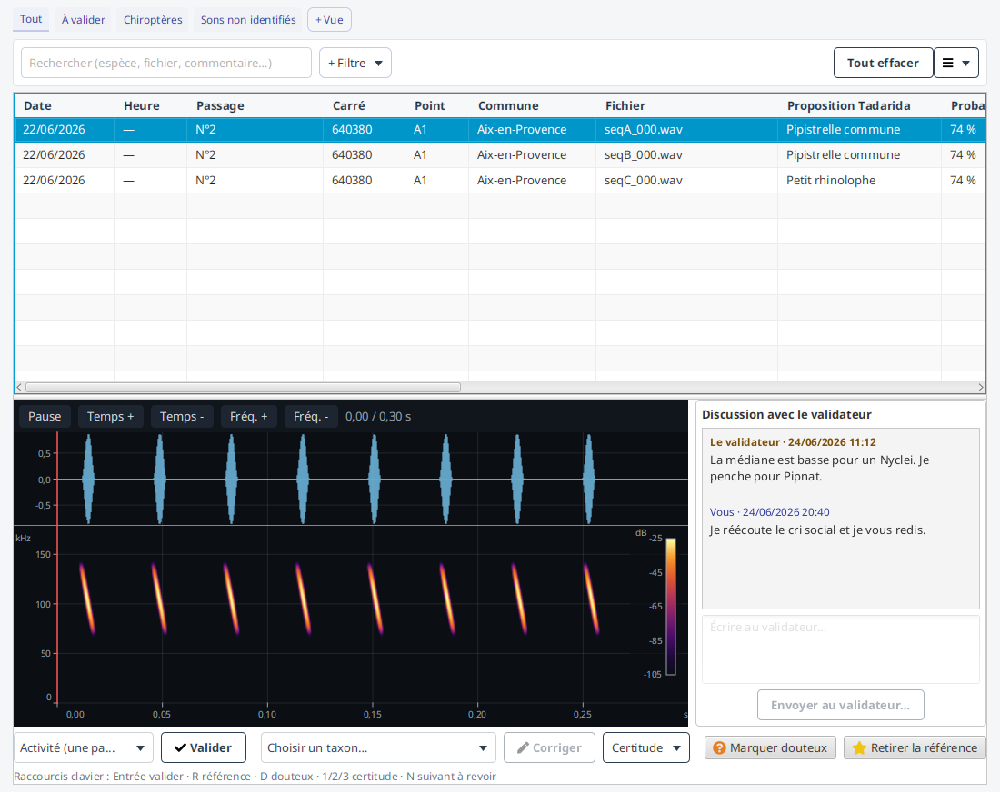
Quelle que soit la source, l'écran présente la table des observations (espèce retenue, proposition Tadarida, statut À revoir / Validée / Corrigée affiché en pastille colorée comme sur les autres écrans de données, mesures d'identification…) que vous pouvez filtrer, trier et dont vous choisissez les colonnes, ainsi qu'un panneau d'écoute pleine largeur (sonogramme + spectrogramme) pour la ligne sélectionnée, où vous repérez et rejouez le cri dans la séquence. Les colonnes de contexte (passage, carré, point) s'affichent quand la source couvre plusieurs passages et se masquent pour un passage unique.
Le tri et les filtres que vous réglez sont mémorisés le temps de la session : si vous quittez puis rouvrez l'écran, vous retrouvez la revue là où vous l'aviez laissée, sans tout re-régler.
Filtrer les observations¶
Une nuit d'enregistrement produit souvent des centaines d'observations : la barre de filtres vous aide à isoler celles que vous voulez revoir. Elle fonctionne « à la manière de Notion » :
- un champ de recherche permanent, à gauche, cherche dans le nom de fichier, l'espèce (taxon Tadarida ou votre correction) et le commentaire ; la recherche ignore la casse et les accents ;
- un bouton « + Filtre » ajoute un critère sous forme de puce ; on retire une puce par sa croix.
Les critères disponibles :
| Critère | Ce qu'il garde | Par défaut |
|---|---|---|
| Statut | À revoir / Validée / Corrigée | À revoir (le plus utile pour la revue) |
| Groupe | un groupe taxonomique présent (Chiroptères, Oiseaux, Orthoptères…) | Chiroptères s'il est présent : « chauves-souris uniquement », qui écarte bruit, oiseaux et orthoptères |
| Espèce | une espèce précise (taxon retenu) | aucune tant que vous n'en choisissez pas une |
| Références | seulement les sons marqués « référence » | (puce booléenne : sa présence suffit) |
| Espèces à enjeu | seulement les observations d'espèces prioritaires du Plan National d'Actions Chiroptères | (puce booléenne : sa présence suffit) |
| Proba | les détections dont la probabilité Tadarida est ≥ au seuil du curseur | 50 % ; les observations sans probabilité sont toujours gardées |
| Heure | les captures dont l'heure tombe dans la plage « de … à … » | nuit (21 h → 6 h) ; la plage gère le passage à minuit, et les captures sans heure sont gardées |
Repérer les espèces à enjeu¶
Une colonne d'indicateur porte un bouclier violet sur les observations dont l'espèce retenue est prioritaire au sens du Plan National d'Actions Chiroptères 2016-2025 : dix-neuf espèces sur les trente-six de métropole, retenues par le plan sur la directive Habitats, l'accord EUROBATS et la Liste rouge nationale.
Sur une nuit à quelques milliers de contacts, ces quelques observations se retrouvaient jusqu'ici à la main, ligne par ligne. Le repère les montre, et la puce « Espèces à enjeu » ne garde qu'elles.
Le repère se lit sur l'espèce retenue : votre correction si vous en avez posé une, sinon la proposition de Tadarida. Corriger une détection vers une espèce prioritaire fait donc apparaître le bouclier, et l'inverse le fait disparaître.
L'absence de bouclier ne veut pas dire « sans intérêt » : l'immense majorité des taxons détectés (oiseaux, orthoptères, micromammifères) ne relèvent tout simplement pas de ce plan, qui ne parle que de chauves-souris.
Les puces se combinent en ET : « Chiroptères » + « Proba ≥ 80 % » ne garde que les chauves-souris les plus sûres. Les compteurs de la barre de statut (À revoir / Validées / Corrigées) suivent en temps réel le sous-ensemble affiché, pas la nuit entière : vous voyez toujours combien il reste à traiter dans ce que vous avez sous les yeux.
À leur droite, un compteur dédié aux espèces à enjeu : « 12 à enjeu, 11 à revoir ». Il dit ce qui reste, parce que c'est là-dessus qu'on agit, et il s'efface s'il n'y a aucune espèce prioritaire dans ce que vous regardez.
Vous pouvez exporter ce sous-ensemble en CSV via ☰ → Exporter les observations (CSV) : le fichier reprend exactement les observations actuellement affichées (donc les filtres appliqués), avec leurs colonnes (carré, point, site, date, espèce, statut, fréquence, commentaire…). Le CSV est en UTF‑8 et s'ouvre directement dans un tableur (Excel, LibreOffice) pour l'analyse ou la transmission.
Une colonne « Espèce à enjeu » y porte le même repère que le bouclier de la table : sans elle, le fichier perdrait à la sortie l'information qu'on cherche en premier, et il faudrait la reconstituer à la main depuis une liste externe.
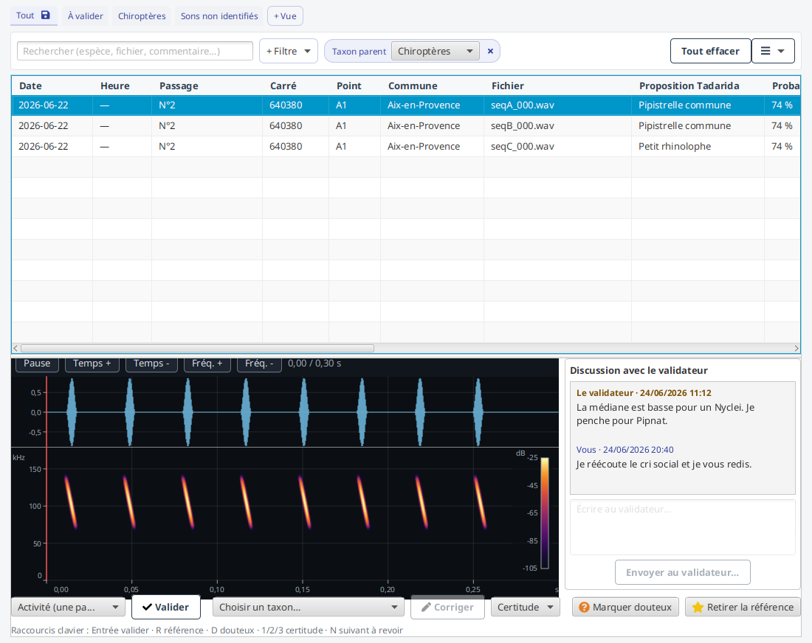
Vues sauvegardées¶
La revue au fil de l'eau est déjà mémorisée automatiquement (vous retrouvez vos filtres et votre tri à la réouverture). Au-delà, une combinaison de filtres utile peut être enregistrée sous un nom pour être rejouée d'un clic : les vues enregistrées s'affichent comme des onglets au-dessus de la barre de filtres. Cliquer sur le nom d'un onglet rejoue sa combinaison ; le bouton « + Vue », au bout de la barre, enregistre les filtres courants sous un nouveau nom ; sur chaque onglet, le crayon le renomme et la croix le supprime.
Choisir et organiser les colonnes¶
Comme tous les tableaux de l'application, celui-ci se trie, se réorganise et laisse choisir ses colonnes (clic droit ou menu ☰ « outils ») : le fonctionnement commun est décrit dans Personnaliser les tableaux.
Le clic droit sur une observation réunit par ailleurs ses actions : ouvrir le passage, la fiche de l'espèce, le sous-menu Validation ▸ (valider, corriger, certitude, référence, douteux) et Copier ▸ (nom latin, n° de carré). Vous n'êtes donc plus obligé de remonter au menu ☰ ni aux boutons pour agir sur la ligne que vous écoutez : voir Agir sur une ligne.
Ici, outre l'espèce, le statut et la proposition Tadarida, la table peut afficher : le nom de fichier de la séquence, la date d'enregistrement, l'heure de capture, la fréquence médiane, votre certitude, un indicateur de commentaire, et les mesures d'identification FME (fréquence de moindre énergie) et fréquence terminale, calculées sur le cri sélectionné.
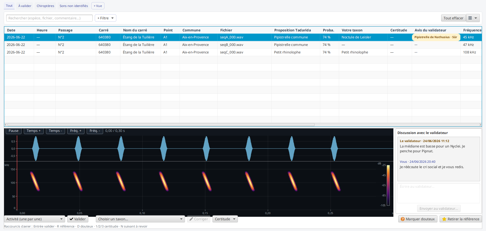
Les mesures FME et fréquence terminale demandent d'analyser le signal du cri : elles se remplissent au fil de l'écoute (un tiret « — » tant que la ligne n'a pas été sélectionnée), pour ne pas analyser toute la nuit d'un coup.
Repérer et écouter le cri¶
Le panneau d'écoute montre le sonogramme et le spectrogramme de la séquence sélectionnée. Comme les cris de chauves-souris sont des ultrasons, le son est ralenti dix fois (expansion temporelle ×10) pour devenir audible.
Quand une observation pointe un cri précis dans la séquence, la fenêtre de ce cri (entre son début et sa fin) est surlignée sur le sonogramme et le spectrogramme, et la lecture s'y positionne directement : vous entendez le bon cri sans chercher. Le menu ☰ propose deux options d'écoute : la lecture automatique à chaque sélection (activée par défaut) et la lecture en boucle.
Quand l'audio n'est plus sur le disque¶
Si le passage a été archivé (voir Passage), ou si une partie de ses fichiers a disparu de votre disque, l'écran vous le dit franchement plutôt que de vous laisser devant un lecteur muet :
- un bandeau en tête d'écran annonce « passage archivé » ou « audio partiel », avec le nombre de séquences encore présentes ;
- à la place du lecteur, un encart explique pourquoi ce son n'est pas écoutable et comment le récupérer (réimporter les fichiers d'origine, bouton Réactiver ce passage dans l'écran Passage) ;
- si l'audio n'est absent que partiellement, l'écoute fonctionne normalement sur les séquences dont le fichier est là, et l'encart n'apparaît que sur les autres.
Tout le travail sur les données reste possible : filtrer, trier, choisir les colonnes, commenter, marquer « douteux », corriger un taxon, changer votre certitude, exporter. Seule l'écoute est impossible — c'est bien ce qui distingue un passage archivé d'un passage perdu.
Quand un fichier substitué est signalé¶
Il y a un cas plus sournois que l'absence : un fichier est bien là au chemin attendu, mais ce n'est pas celui qui a produit les observations. Cela arrive quand un enregistrement en a remplacé un autre au même endroit : une redécoupe, une autre nuit du même carré, une sauvegarde restaurée d'une autre version. L'écran s'en aperçoit en comparant l'empreinte du fichier à celle que la base a retenue.
Plutôt que de vous laisser écouter (et valider une espèce sur) un autre enregistrement sans le savoir, l'écran remplace le lecteur par un encart qui dit pourquoi ce son n'est pas celui attendu et comment le retrouver : réactivez le passage depuis le dossier qui contient les bons fichiers. Là encore, tout le reste du travail sur les données reste possible.
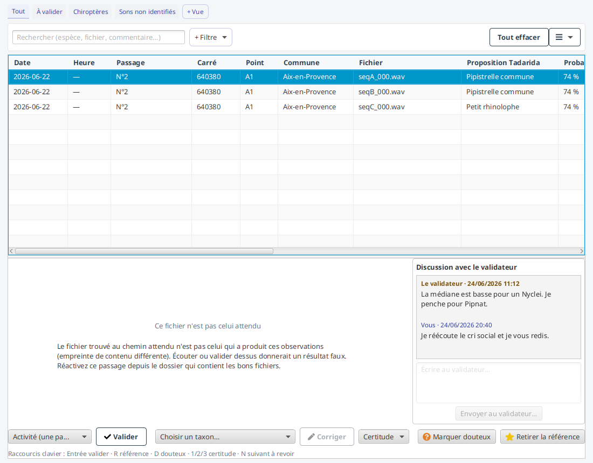
Relire et corriger¶
Pour l'observation sélectionnée, vous pouvez :
- Valider : retenir la proposition de Tadarida ;
- Corriger : retenir un autre taxon, choisi dans la liste ;
- Marquer / retirer la référence : ajouter l'observation à votre corpus de sons de référence, ou l'en retirer ;
- Marquer douteux : noter « à repasser » une observation écoutée qui vous laisse un doute, pour y revenir plus tard ;
- Déclarer votre certitude : le menu Certitude (Sûr / Probable / Possible) enregistre le degré de confiance que vous accordez à l'espèce retenue. C'est l'équivalent de la « Confiance observateur » du portail Vigie-Chiro : vide tant que vous ne l'avez pas déclarée (elle n'est jamais déduite d'une probabilité), remplaçable à tout moment, effaçable par « Effacer la certitude ». La colonne Certitude de la table affiche votre déclaration (un tiret sinon).
Un mode inventaire permet de propager une validation aux autres détections de la même espèce.
Éditer un commentaire : cliquez sur la case Commentaire d'une ligne pour saisir ou modifier une note sur cette observation (l'indicateur de commentaire de la table signale les lignes annotées).
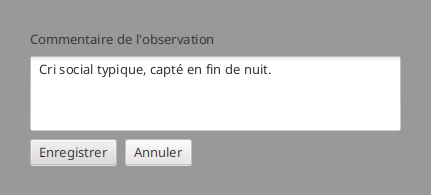
Aller vite : clavier et actions groupées¶
La revue est pensée pour enchaîner les observations sans quitter le clavier :
- ↑ / ↓ naviguent d'une ligne à l'autre ;
- Entrée valide, R marque / retire la référence, D bascule le drapeau douteux ;
- 1 / 2 / 3 déclarent la certitude (Sûr / Probable / Possible) ;
- N saute à la prochaine observation « À revoir ».
Vous pouvez aussi sélectionner plusieurs lignes (Ctrl+clic, ou Maj+clic pour une plage) et valider, corriger, marquer en référence ou déclarer la certitude de toute la sélection d'un coup. Une action groupée est tout ou rien (si elle échoue, aucune ligne n'est modifiée) et enregistre la validation en mode activité (sans propagation inventaire, qui n'aurait pas de sens sur une sélection hétérogène).
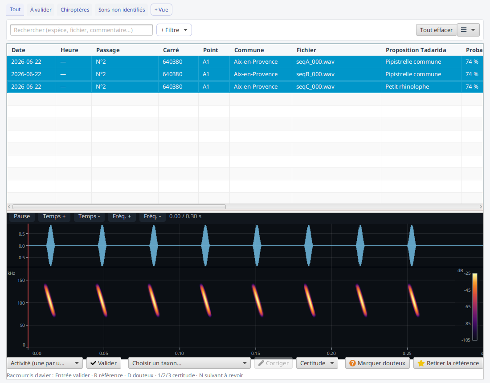
Consulter la fiche d'une espèce¶
En pleine revue, pour lever un doute sur une identification, un double-clic sur une observation (ou un clic droit → « Fiche de l'espèce », ou encore le menu ☰ → Fiche de l'espèce) ouvre dans votre navigateur une fiche d'information sur la proposition Tadarida de la ligne sélectionnée. L'entrée s'adapte à la sélection : elle nomme l'espèce (par exemple « Fiche de l'espèce (Pipistrelle commune) ») et s'ouvre au clic.
Toutes les lignes n'ont pas de fiche : une séquence non identifiée, un pseudo-taxon (Bruit, Oiseau) ou un couple d'espèces n'en a aucune. Dans le menu, l'entrée est alors grisée avec la mention « aucune fiche disponible » ; au double-clic, rien ne s'ouvre et un bandeau vous le dit (« Aucune fiche disponible pour « Bruit » »). Sur une nuit réelle, où l'essentiel des lignes est du bruit, c'est le cas le plus fréquent : le double-clic ne reste jamais sans réponse.
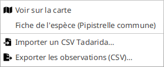
La source de la fiche dépend du taxon :
- chauves-souris : la fiche descriptive du Plan National d'Actions Chiroptères (en français) ;
- autres taxons (oiseaux, orthoptères…) : une source universelle par nom scientifique, GBIF par défaut ou Wikipédia FR au choix.
Ce choix se règle une fois pour toutes dans le ☰ du bandeau (en haut à droite de la fenêtre), via la case « Fiches espèces sur Wikipédia (sinon GBIF) » : décochée (le défaut), les fiches hors chauves-souris s'ouvrent sur GBIF ; cochée, sur Wikipédia FR. Le réglage est mémorisé d'une session à l'autre.
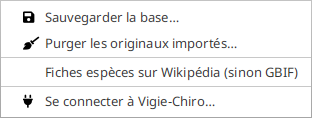
Validation d'un passage (Tadarida)¶
Ouvert sur un passage (accessible après le dépôt : Vigie-Chiro renvoie les résultats
d'identification 24 à 48 h plus tard, voir le parcours), l'écran permet
d'importer le fichier CSV de résultats Tadarida, puis d'exporter le fichier _Vu réinjectable
(avec, en option, la trace du mode de validation). Ces actions propres au passage vivent dans le menu « ☰ ».
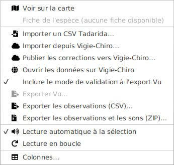
Les entrées liées à Vigie-Chiro n'apparaissent que sur un passage et quand l'application est connectée : sur le corpus de référence, ou hors connexion, le menu se réduit à ce qui a du sens. Une entrée sans objet reste visible mais grisée, avec sa raison entre parenthèses, plutôt que de disparaître sans explication.
Plutôt que d'importer le CSV à la main, le menu ☰ → Importer depuis Vigie-Chiro… récupère les résultats directement depuis la plateforme (application connectée, passage déposé et traité). Si le passage n'est pas encore relié à une participation, l'application propose de choisir la bonne dans la liste de vos participations. L'import CSV reste disponible en repli - les deux alimentent le même écran.
Le premier import est rapide : il récupère le fichier d'observations d'un seul coup quand la plateforme le propose. Il ne rapatrie alors ni les identifiants de la plateforme, ni l'avis du validateur, ni les échanges avec lui : rien de tout cela n'existe encore à ce stade, et les identifiants ne servent qu'au moment de publier vos corrections - c'est la publication qui va les chercher (voir plus bas).
Un réimport, lui, prend toujours la voie complète, page par page : c'est le geste par lequel vous allez chercher ce qui a changé côté plateforme, à commencer par l'avis du validateur du Muséum et vos échanges avec lui. Il serait absurde qu'il les efface au lieu de les rafraîchir. La même voie complète sert de repli quand le fichier d'observations n'est pas disponible. Elle s'affiche dans une fenêtre de progression avec un bouton Annuler : renoncer laisse le passage tel qu'il était, sans demi-import.
Ce que l'import vous rend à la fin¶
Quand l'import se termine, un compte rendu dit ce qu'il a fait, en proportions plutôt qu'en une phrase.
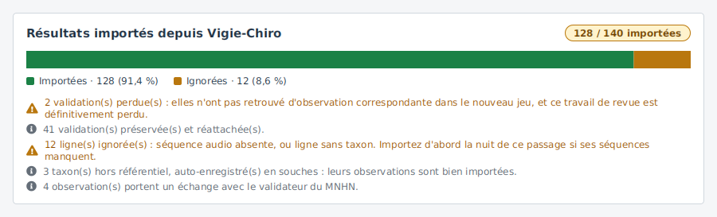
La barre ventile toutes les lignes reçues : celles qui sont devenues des observations, et celles qui ont été écartées. Le reste tient en mentions, chacune à son registre :
| Mention | Ce qu'elle veut dire |
|---|---|
| validations perdues ⚠ | des corrections, marquages ou commentaires que vous aviez saisis n'ont pas retrouvé d'observation correspondante dans le nouveau jeu. Ce travail est définitivement perdu. |
| validations préservées | vos saisies ont été réattachées aux nouvelles observations : un réimport ne vous coûte pas votre revue |
| lignes ignorées ⚠ | leur séquence audio est absente, ou la ligne n'a pas de taxon. Si ce sont les séquences qui manquent, importez d'abord la nuit de ce passage |
| taxons hors référentiel | des codes inconnus du référentiel ont été enregistrés en souches : leurs observations sont bien importées, il n'y a rien à faire |
| échanges avec le validateur | des observations portent un message du Muséum. La mention est là pour que vous ne les découvriez pas par hasard, en ouvrant la bonne ligne |
Les deux lignes de validations n'apparaissent qu'au réimport : sur un premier import, il n'y avait rien à préserver ni à perdre, et l'afficher à zéro ferait chercher un problème qui n'existe pas.
Si l'analyse de la plateforme n'est pas terminée, l'import vous dit pourquoi il n'y a rien à récupérer : l'analyse n'a jamais été lancée (lancez-la depuis « Préparer le dépôt », étape 4), elle est planifiée ou en cours (patientez : comptez plusieurs dizaines de minutes), elle a échoué (le motif est indiqué), ou - cas anormal - elle est terminée sans renvoyer la moindre observation, et c'est alors le dépôt qu'il faut vérifier. Le suivi de l'analyse est affiché dans Préparer le dépôt.
Le menu ☰ → Ouvrir les données sur Vigie-Chiro ouvre dans votre navigateur la page des données de la participation sur le portail : pratique pour comparer ce que la plateforme a identifié avec ce que vous voyez ici. L'entrée n'apparaît que quand l'écran cible un passage, et reste grisée (« passage non lié ») tant que le passage n'a pas de participation liée.
Publier vos corrections vers Vigie-Chiro¶
Dans l'autre sens, une fois vos observations revues (taxon retenu et certitude déclarée), le menu ☰ → Publier les corrections vers Vigie-Chiro… pousse vos décisions vers la plateforme : chaque observation publiée y porte alors votre taxon et votre confiance d'observateur, comme si vous les aviez saisis sur le site. Une confirmation récapitule d'abord ce qui va partir et ce qui restera à quai : les observations sans certitude (déclarez-la d'abord) et les taxons hors référentiel. La publication est rejouable sans risque : republier réécrit les mêmes valeurs.
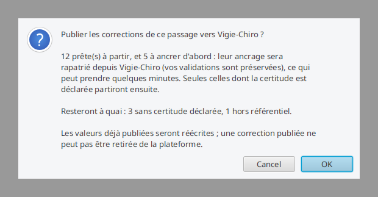
Rien n'est envoyé tant que vous n'avez pas accepté. Le récapitulatif distingue ce qui part, ce qui sera ancré d'abord (voir plus bas) et ce qui reste à quai avec sa cause : les observations à ancrer n'y figurent pas, puisque l'envoi va justement s'en occuper.
Ce que la publication vous rend à la fin¶
Une fois l'envoi terminé, un compte rendu dit quelle part de votre revue est arrivée sur la plateforme — c'est la question qu'on se pose à cet instant, et un décompte seul n'y répond pas.
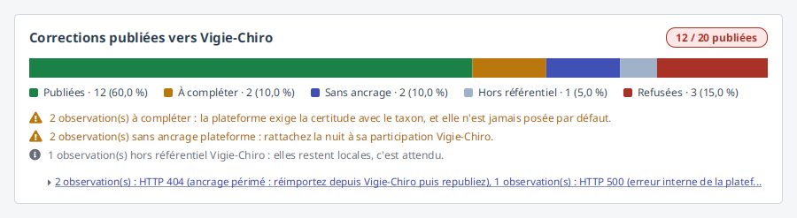
La barre ventile toutes les observations revues, et les trois natures d'écart y gardent chacune leur part, parce qu'elles appellent trois gestes différents :
| Ce qui est écarté | Ce que vous avez à faire |
|---|---|
| à compléter | déclarer la certitude : la plateforme l'exige avec le taxon, et elle n'est jamais posée par défaut |
| sans ancrage | rattacher la nuit à sa participation Vigie-Chiro |
| hors référentiel | rien — le taxon n'existe pas côté plateforme, votre observation reste locale, et c'est attendu |
Les refus de la plateforme, eux, sont regroupés par cause : vingt observations refusées pour la même panne font une ligne, pas vingt, et la liste des observations concernées s'ouvre d'un clic.
Vos observations n'ont pas besoin d'être « rattachées » une par une à la plateforme au préalable : si ce lien manque, la publication le récupère elle-même avant d'envoyer. C'est le cas d'une nuit importée rapidement (le fichier d'observations seul) ou reconstruite depuis la plateforme. Une fenêtre de progression vous le dit alors (« Récupération des identifiants et des échanges avec le validateur… »), avec un bouton Annuler : cette récupération peut prendre quelques minutes. Elle préserve vos validations - publier ne vous coûtera jamais votre travail de revue. Une nuit déjà rattachée n'en paie pas le coût, et le geste part directement.
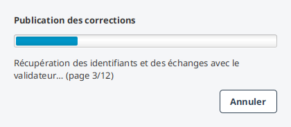
Annuler rend la main immédiatement : l'arrêt est demandé à chaque page rapatriée, pas seulement à la fin. Ce que la fenêtre a déjà ramené reste acquis - renoncer ne défait rien.
Le nom de cette étape dit les deux choses qu'elle ramène : les identifiants dont la publication a besoin, et les échanges avec le validateur du Muséum, s'il y en a - les deux voyagent ensemble. Au retour, le compte rendu vous dit sur combien d'observations le validateur s'est exprimé (« Le validateur s'est exprimé sur 3 observation(s). »), plutôt que de vous laisser le découvrir en ouvrant la bonne ligne par hasard. Il se tait quand il n'y a rien à dire.
Une seule situation reste hors d'atteinte : une nuit qui n'a aucune participation sur la plateforme, donc rien à quoi se rattacher. L'entrée de menu est alors grisée et le dit (« rattachez la nuit à sa participation Vigie-Chiro »).
Ce que la publication vous rend¶
À la fin, un rapport s'affiche sous l'entrée de menu. Il dit ce qui est parti, et surtout ce qui n'est pas parti :
- les corrections envoyées ;
- celles à compléter, dont la certitude n'a pas été déclarée ;
- celles sans ancrage plateforme, avec le remède : rattacher la nuit à sa participation ;
- celles hors référentiel ;
- les refus de la plateforme - et ils sont tous listés, chacun avec sa cause.
Ce dernier point mérite d'être souligné : la version précédente n'en montrait qu'un seul sur N (« 3 refus, dont : … »). Les autres causes existaient et ne vous étaient jamais dites. Si une observation part et qu'une autre est refusée, vous savez maintenant laquelle et pourquoi.
Chaque ligne porte une icône en plus de sa couleur, pour rester lisible si vous distinguez mal les couleurs.
À savoir : une correction publiée se remplace mais ne se retire pas de la plateforme, et
une relance du traitement serveur efface les corrections publiées (republiez alors après le
nouveau traitement). L'export _Vu reste disponible en repli hors connexion.
Pour importer, vous pouvez soit utiliser le menu « ☰ », soit glisser-déposer directement le fichier CSV sur l'écran : pratique quand la fenêtre de sélection de fichier du système ne s'ouvre pas (une astuce en bas de l'écran, visible quand l'écran est ouvert sur un passage, rappelle ce geste). À la fin de l'import, un bandeau confirme le nombre d'observations chargées ; en cas de problème (séquence introuvable, fichier illisible…), un bandeau rouge explique ce qui s'est passé.
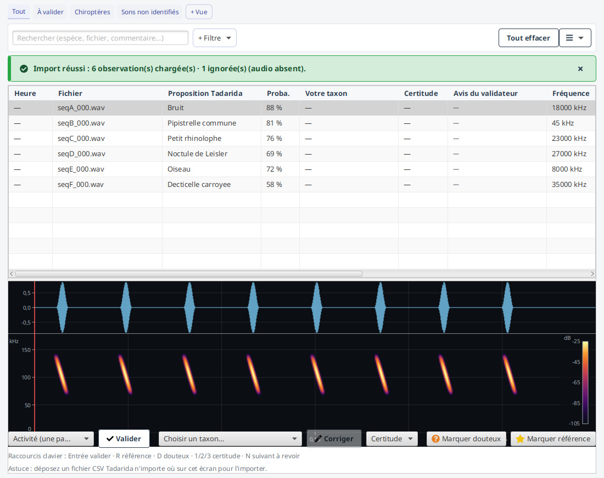
L'import est tolérant : les observations dont le son n'est pas disponible sont ignorées (le bandeau en indique le nombre), et les taxons que Tadarida propose hors de la liste de référence sont conservés tels quels. Vous pouvez ainsi importer un fichier de résultats complet même si vous n'avez gardé qu'une partie des sons.
L'avis du validateur, et la discussion qu'il ouvre¶
Sur Vigie-Chiro, trois personnes peuvent se prononcer sur une même détection :
| Qui | Ce qu'il dit | Où c'est affiché |
|---|---|---|
| Tadarida | l'algorithme propose une espèce | colonne « Proposition Tadarida » |
| Vous | vous corrigez si vous n'êtes pas d'accord | colonnes « Votre taxon » et « Certitude » |
| Le validateur (expert du MNHN) | il tranche | colonne « Avis du validateur » |
Le troisième avis arrive à chaque import depuis Vigie-Chiro, en même temps que le reste. Vous n'avez rien à faire pour l'obtenir : il apparaît dès qu'un expert s'est prononcé sur votre nuit.
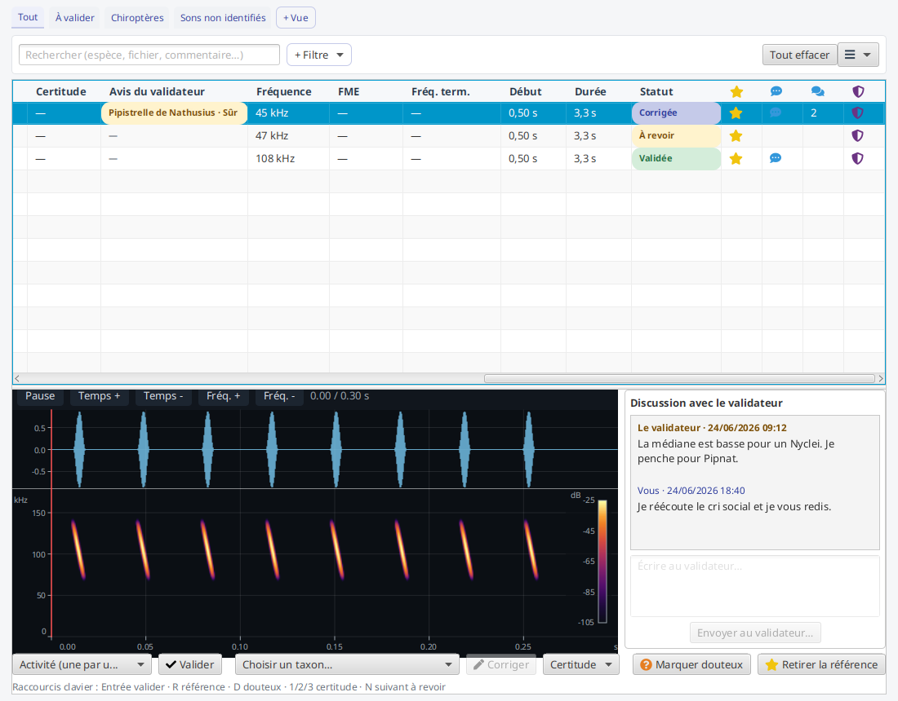
Le désaccord saute aux yeux
L'avis du validateur est coloré selon qu'il vous confirme ou vous contredit. Un expert qui confirme ne vous demande rien ; un expert qui contredit votre correction est ce que vous devez voir en premier — c'est là que se joue la qualité de la donnée que vous avez déposée.
Tant qu'aucun expert ne s'est prononcé — le cas le plus courant — la colonne reste discrète (« — »).
Lire le fil de discussion¶
Quand le validateur vous écrit, un panneau s'ouvre à droite du lecteur : vous lisez la discussion en écoutant le cri, sans changer d'écran. La colonne Discussion (une bulle en en-tête) indique le nombre de messages, pour repérer d'un coup d'œil les détections dont il faut parler.
Chaque message dit qui parle (« Vous », « Le validateur ») et quand.
Répondre au validateur¶
La zone de saisie sous le fil vous permet de répondre. Une confirmation vous montre d'abord le texte qui va partir.
Un message envoyé ne peut plus être retiré
Contrairement à une correction (qui se remplace), un message est définitif : la plateforme ne permet ni de le supprimer, ni de le modifier, et il est lu par un expert du MNHN.
C'est pourquoi la confirmation cite votre texte avant l'envoi : relisez-le. Si vous annulez, votre texte reste dans la zone de saisie — rien n'est perdu.
Si l'envoi échoue (plateforme injoignable, par exemple), rien n'est publié et votre texte vous est rendu : vous ne risquez pas de croire envoyé un message que le validateur ne verra jamais.
La zone de saisie est désactivée, en expliquant pourquoi, quand il n'y a personne à qui parler : une détection issue d'un import CSV ou d'une saisie manuelle n'existe pas sur Vigie-Chiro.
Sons de référence¶
Depuis l'accueil, l'activité Sons & validation ouvre l'écran sur toutes les observations marquées « référence » : vous les écoutez, les validez / corrigez, retirez la référence, et exportez la bibliothèque (un récapitulatif CSV + la copie des fichiers son) vers un dossier de votre choix.